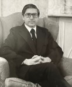

 Sadly the family announces the passing of Dr. James Likoudis. He is remembered as a loving and caring husband, father of six and grandfather of 29. As a Catholic, his Faith was exemplary, his Love and Charity genuine, and his Hope was in the Lord. On September 3, 2024 with his family around him, he passed away and presented himself to his Lord, and may he hear those sweet and consoling words "WELL DONE, GOOD AND FAITHFUL SERVANT, ENTER THE KINGDOM OF MY FATHER".Jim, may the Lord give you rest and shine His eternal Light on you. |
|
from the NATIONAL CATHOLIC REGISTER by Philip Blosser
and Andrew Likoudis: JAMES LIKOUDIS WAS A BEACON OF CATHOLIC FAITH IN A CHANGING WORLD from CATHOLIC ANSWERS by Tom Nash: REMEMBERING JAMES LIKOUDIS |
|
-NEW REVISED EDITION – JUST RE-PUBLISHED on Dec. 20,
2023 A Compendium of Historical Eastern Orthodox Conversions to Catholicism: "HERALDS Of A CATHOLIC RUSSIA: Twelve Spiritual Pilgrims From Byzantium to Rome" CLICK |
|
-NEW- JUST PUBLISHED Dr. Likoudis'
Analysis of "Palamism" prevalent in Eastern Orthodox' thinking. "UPACKING PALAMISM: A Catholic Critique" CLICK |
|
A NEW revised 3rd edition of the
trilogy of works by Dr. Likoudis on Eastern Orthodoxy issues: " The Divine Primacy of the Bishop of Rome and Modern Eastern Orthodoxy: Letters to a Greek Orthodox on the Unity of the Church." CLICK |
|
-NEW- An Anthology of Dr. Likoudis'
Contribution to Catholic-Orthodox Relations: "THE DIVINE MOSAIC: Piecing Together Catholic and Orthodox Unity" CLICK |
|
-NEW- Dr. Likoudis' on the role of
the Dominican Order during the 11th-15th centuries: "SCHOLARS OF THE SACRED: Dominican Theologians in Late Medieval Byzantium" CLICK |
| Complete List of Books and Booklets written or co-authored by James Likoudis. INDEX |
| GENERAL INDEX OF ARTICLES AND ESSAYS By Dr. LIKOUDIS |
|---|
| DOCTRINES, CATECHETICS & FAITH ISSUES INDEX |
The articles contained in this website represent but a small portion of the total
writings of Dr. Likoudis. Being a convert from Greek Orthodoxy, he has personal and
extensive knowledge of Eastern Orthodoxy issues. As (former) President of Catholics
United for the Faith International CUF, he has travelled far and wide to promote the
Unity of the Church. Dr. Likoudis has built a solid reputation as a Catholic
apologist specializing in the field of catechesis, sex education, ecumenism and the
Papacy.
Please, come to visit us often. Old and new
articles are continously added to this website. |
| LITURGY, RITUALS AND DISCIPLINE ISSUES INDEX | |
| FAMILY, MORALS & SEX EDUCATION ISSUES INDEX | |
| ECUMENISM & EASTERN ORTHODOX ISSUES INDEX | |
| DIALOGUES ON INTERFAITH & ECUMENISM INDEX | |
| BOOK REVIEWS BY Dr. JAMES LIKOUDIS INDEX | |
| LETTERS AND REPLIES BY Dr. LIKOUDIS INDEX | |
| CATHOLICISM AND THE WITNESS OF SAINTS INDEX | |
| MARIAN DOCTRINE AND MARIAN DEVOTIONS INDEX |
|
Mr. Andrew Likoudis, grandson of Dr. James Likoudis, is a student of business and
entrepreneurship, at Towson University in Maryland. Con-currently, also studying
culture, philosophy and his Catholic faith, on his own. One of his goals is to
preserve and promote his grandfather Dr. James Likoudis’ legacy by compiling, editing
and republishing his many works. He is also a budding writer of articles on various
issues; his most recent one was published in the "National Catholic Register"
magazine on January 27, 2022 "An Evening With Alice von Hildebrand" More of his writing can be found at his column: https://www.patheos.com/blogs/natureandgrace/ |
| "Orthodoxy Revisited: Contrasting
The Faith and Practice of The Eastern Orthodox Church with Evangelical Doctrine" |
| "Church, Papacy and Schism" |
| Michael Whelton Vs. The Petrine Primacy |
| Eastern Orthodoxy and The Petrine Primacy |
| RELEVANT LINKS | To contact Dr. James Likoudis, write: | |
|---|---|---|
| CREDO of Buffalo NY, Chapter of CUF | By Land Mail | 593 Allison Dr., Ann Arbor, MI 48103 |
| Catholics United for the Faith - CUF | By E-Mail | |
For questions about this page, write to: ndoniu@msn.com
"Dissent from the
Magisterium... is not compatible with being a good
Catholic."
- Pope St. John Paul II - To the assembled
Body of U.S. Bishops on Sept. 16, 1987